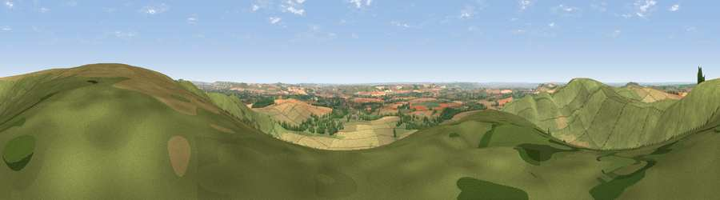

Viewpoint near Alton Priors
#3874 in England · top 2% of its area beats it · near Alton PriorsWhere it is
The exact computed spot (SU 10175 63850). Click the marker for map links.
The view, rendered

A 360° render of this exact spot computed from the terrain model, tree cover and land cover — summer colours, afternoon light, calibrated against photographs of famous viewpoints. Real trees, hedges and buildings will differ in detail.
The panorama
Grey silhouette: terrain skyline in each direction (720 bearings, Earth curvature and refraction included). Dashed green: skyline with trees (+15 m) and buildings (+8 m) as obstacles. Blue strip: how far the ground is visible on each bearing.
Where the view opens
Wedge length = distance to the farthest visible ground on that bearing (vegetation-aware). Rings at 10, 25 and 50 km.
What fills the view
48% grassland · 46% cropland · 5% woodland ·
Angular shares of the visible panorama (visual magnitude), not map area. Landscape diversity 0.39 (0–1 Shannon).
Key numbers
More beautiful places nearby
The staircase of upgrades: each row has a higher view potential than everything closer. Driving times are estimates from straight-line distance, calibrated against real road routing — check an actual route before setting out.
| Place | Direction | Drive | Score |
|---|---|---|---|
| Viewpoint near Allington | WNW · 2 km | ~6 min | 75.6 |
| Martinsell viewpoint | E · 8 km | ~16 min | 76.9 |
| Viewpoint near Berwick St John | SSW · 47 km | ~67 min | 78.2 |
| Viewpoint near Stinchcombe | NW · 50 km | ~71 min | 80.5 |
| Nottingham Hill | N · 66 km | ~89 min | 80.9 |
| Viewpoint near Bredon's Norton | NNW · 77 km | ~101 min | 81.3 |
| Bredon Hill | N · 78 km | ~102 min | 83.0 |
| Tennyson Down | SSE · 82 km | ~106 min | 83.2 |
51.37362, -1.85521 · source: screening · position refined by local search. Computed location — check access rights before visiting.